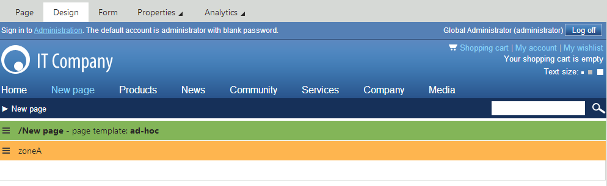
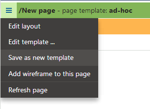
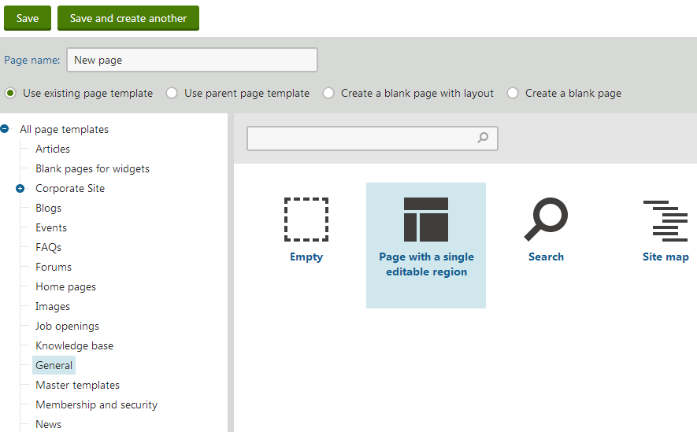

Creating portal engine page templates
There are two types of portal engine page templates:
Ad-hoc - templates bound to one specific page. The system automatically deletes ad-hoc templates if their page is removed.
Re-usable - named templates that can be shared by any number of pages, even across multiple websites in the system.
Page terminology
The main purpose of page templates is to build the design of Pages, i.e. pages that focus on presentation rather than holding data. Pages are page types that have the following properties enabled on the General tab:
Show template selection
Behaves as Page (menu item) type
By default, use the Page (menu item) page type to create pages.
Pages that are not configured to behave as Page (menu item) type also use page templates, but typically inherit their template from a parent page.
Creating new pages with ad-hoc templates
The most direct way to build pages using the portal engine is through ad-hoc templates:
Open the Pages application.
Select a parent page for the new page.
Click New (
 ) and choose the Page (menu item) page type.
) and choose the Page (menu item) page type.Type a name into the Page name field.
Choose the Create a blank page option.
Click Save.
The system adds the new page to the content tree. You can now work with the template on the page's Design tab. The new page uses an empty ad-hoc page template with a single web part zone.
The section with a green header designates the area defined by the page template.
The area with a yellow header inside the template is a web part zone, where you can place web parts.

Viewing a new empty ad-hoc template on the Design tab
Build the structure and content of the template by editing the page layout and adding web parts.
Creating re-usable page templates
Re-usable templates allow you to:
Prepare templates that content editors can select when creating pages
Share the same page template across multiple pages
To create a re-usable template:
Create a new page with an ad-hoc template and implement the required template design.
In the Pages application, open the page's Properties -> Template tab.
Click Save as new template.
The Save as new page template dialog opens.
Tip
You can also save ad-hoc templates as re-usable directly on the Design tab:
Right-click the page template header.
Select Save as new template in the menu.

Opening the page template menu on the Design tabFill in the following values:
Template display name - type a name for the re-usable template.
Template category - select a category for the template.
Assign to the current page - if checked, the system automatically assigns the new template to the selected page instead of the original template.
Click Save & Close.
You can now assign the new page template when creating pages:
Choose the Use existing page template option in the template selection dialog.
Select the template (find the template in the category tree or search for the name).

Creating a new page based on a re-usable template
Modifying re-usable templates
When you edit the layout or web part configuration of a re-usable page template, the changes affect all pages that use the given template. If you need to modify the template only for one specific page:
Select the page with the required re-usable template in the Pages application.
Open the Properties -> Template tab.
Click Clone template as ad-hoc.
The system creates a new ad-hoc page template and assigns it to the page.
Tip
You can also clone re-usable templates as ad-hoc on the Design tab:
Right-click the page template header.
Select Clone template as ad-hoc in the menu.
You can now edit the template without affecting pages that use the original template.
Note
Keep in mind that the new template is now ad-hoc. If you delete the associated page at a later point, the system also removes the page template.
If you want to use the modified template on other pages, you can save it as a named template by clicking Save as new template on the Properties -> Template tab.